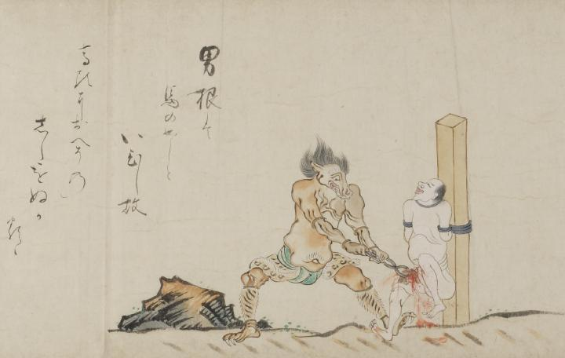

馬のような頭の鬼が、柱に縛られた亡者の男根をペンチのような道具で潰している。鬼の肌は黄色く、虎皮の腰巻と脚絆を着け、両手で道具を持っている。
出典：親書誌：U426_nichibunken_0058：地獄草紙絵巻；ジゴクゾウシエマキ／日付：2006／資源識別子：U426_nichibunken_0058_0005_0000
Copyright (c)2010- International Research Center for Japanese Studies, Kyoto, Japan. All rights reserved.